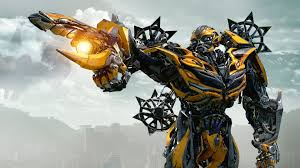
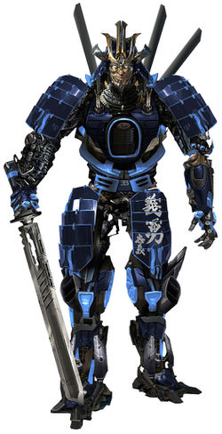
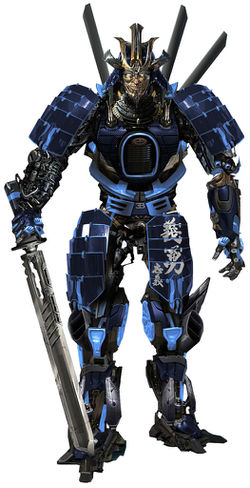

1.
Bumblebee(B-127)
Click here for more info
Bumblebee, designation B-127, is a fictional robot superhero in the many continuities in the Transformers franchise. The character is a member of the Autobots, a group of sentient self-configuring modular extraterrestrial robotic lifeforms.
In most versions, Bumblebee is a small yellow Volkswagen Beetle, although since the live action movies, he has appeared as vehicles inspired by several generations of the Chevrolet American muscle cars – with the live-action film versions being a yellow Camaro with black racing stripes.
Bumblebee appears in most of the series and later becomes the main protagonist in Transformers: Robots in Disguise, Bumblebee, and Transformers: Cyberverse.

2.
Optimus Prime(Orion Pax)
Click here for more info
Optimus Prime (formerly Orion Pax) is constantly, if not always depicted as having strong moral character, excellent leadership, and sound decision-making skills, and possesses brilliant military tactics, powerful martial arts, and advanced extraterrestrial weaponry. Optimus Prime has a strong sense of honor and justice, being dedicated to building peaceful and mutually beneficial co-existence with humans, the protection of life and liberty of all sentient species.
Optimus Prime is usually depicted as being a member of an ancient Transformers race called the Dynasty of Primes, often receiving the title "The Last Prime" in many stories, in which he is depicted as being the last of the Primes.
 3.
Hot Rod
Click here for more info
Hot Rod as known as Rodimus Prime is an Autobot who has been on Earth for a long time. Brother-in-arms to Bumblebee, as the two have fought in many battles together. Brave and patient, he has spent years undercover on earth after having been assigned to watch over Viviane Wembly, who he has grown very fond of.
At some point after arriving on the planet, he somehow picked up a French accent that he did not know how to get rid of, something that caused him much frustration.
3.
Hot Rod
Click here for more info
Hot Rod as known as Rodimus Prime is an Autobot who has been on Earth for a long time. Brother-in-arms to Bumblebee, as the two have fought in many battles together. Brave and patient, he has spent years undercover on earth after having been assigned to watch over Viviane Wembly, who he has grown very fond of.
At some point after arriving on the planet, he somehow picked up a French accent that he did not know how to get rid of, something that caused him much frustration.
 4.
Drift
Click here for more info
A former Decepticon turned Autobot commando, Drift's strength lies not only in his mastery of ancient swords, but in his composure in battle. Despite the dark times upon the Autobots, Drift remains calm, dignified, and thoughtful, often taking time to practice his swordsmanship and spout haikus about whatever's going on. Leaving the Decepticons didn't automatically fix everything, though.
Drift is still prone to manic bouts of aggression if he's startled or otherwise spooked, and is quick to try to stab whatever's the problem to death. He's taken up meditation to complement his swordsmanship to hopefully curb this lingering rage.
Drift was among the Autobots who had gone into hiding on Earth after humanity turned against the Autobots. To his disgruntlement, Bumblebee took de facto command of the Autobots in the absence of Optimus Prime. Drift was overjoyed at the return of his sensei, declaring there was hope after all.

4.
Drift
Click here for more info
A former Decepticon turned Autobot commando, Drift's strength lies not only in his mastery of ancient swords, but in his composure in battle. Despite the dark times upon the Autobots, Drift remains calm, dignified, and thoughtful, often taking time to practice his swordsmanship and spout haikus about whatever's going on. Leaving the Decepticons didn't automatically fix everything, though.
Drift is still prone to manic bouts of aggression if he's startled or otherwise spooked, and is quick to try to stab whatever's the problem to death. He's taken up meditation to complement his swordsmanship to hopefully curb this lingering rage.
Drift was among the Autobots who had gone into hiding on Earth after humanity turned against the Autobots. To his disgruntlement, Bumblebee took de facto command of the Autobots in the absence of Optimus Prime. Drift was overjoyed at the return of his sensei, declaring there was hope after all.
